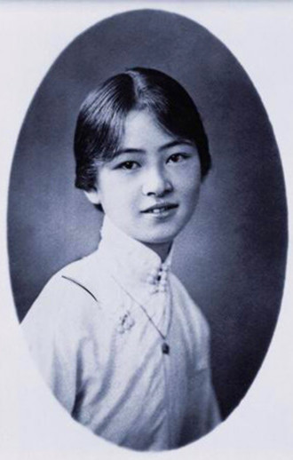
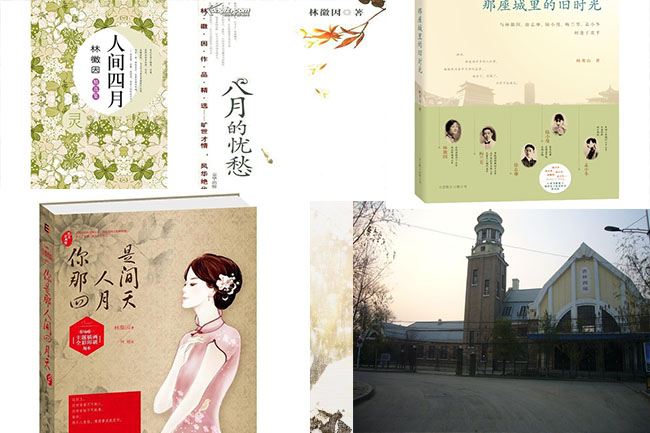
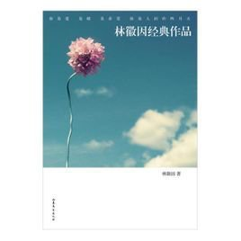

林徽因
林徽因（1904年6月10日－1955年4月1日），女，汉族，福建闽县（今福州）人，出生于浙江杭州，原名林徽音，其名出自“《诗·大雅·思齐》：大姒嗣徽音，则百斯男”。后因常被人误认为当时一作家林微音，故改名徽因。 中国著名建筑师、诗人、作家。人民英雄纪念碑和中华人民共和国国徽深化方案的设计者、建筑师梁思成的妻子。三十年代初，同梁思成一起用现代科学方法研究中国古代建筑，成为这个学术领域的开拓者，后来在这方面获得了巨大的学术成就，为中国古代建筑研究奠定了坚实的科学基础。文学上，著有散文、诗歌、小说、剧本、译文和书信等，代表作《你是人间四月天》，《莲灯》，《九十九度中》等。其中，《你是人间四月天》最为大众熟知，广为传诵。
林徽因，出身于官宦世家。祖父林孝恂进士出身，历官浙江金华、孝丰等地。父林长民毕业于日本早稻田大学，擅诗文，工书法，曾任北洋政府司法总长等职。清光绪三十年(1904年)六月，徽因生于浙江杭州，随祖父母居住。5岁，由大姑母林泽民授课发蒙。8岁，移居上海，入虹口爱国小学学习。1916年，因父在北洋政府任职，举家迁往北京。她就读于英国教会办的北京培华女中。1920年4月，随父游历欧洲，在伦敦受到房东女建筑师影响，立下了攻读建筑学的志向。在此期间，她还结识了诗人徐志摩，对新诗产生浓厚兴趣。翌年，随父回国，仍到培华女中续学。1923年，徐志摩、胡适等人在北京成立新月社，徽因常常参加新月社举办的文艺活动，曾登台演出印度诗人泰戈尔的诗剧《齐德拉》，饰演主角齐德拉公主，台词全用英语。她流利的英语和俊秀的扮相，在文艺界留下深刻印象。 1924年6月，林徽因和梁启超长子梁思成同时赴美攻读建筑学。由于当时美国宾州大学建筑系不收女生，她改入该校美术学院，而主要仍选修建筑系的课程，实现了自己的志愿。1927年夏，从美术学院毕业后，又入耶鲁大学戏剧学院学习舞台美术设计半年。1928年春，她同梁思成结婚。8月，夫妻偕同回国，一起受聘于东北大学建筑系。林徽因在到职前先回福州探亲，曾应福州师范学校和英华中学之请，作《建筑与文学》和《园林建筑艺术》的演讲。又为其叔林天民设计福州东街文艺剧场。翌年，到东北大学讲授《雕饰史》和专业英语。 从1930年到1945年，梁思成林徽因夫妇二人共同走了中国的15个省，200多个县，考察测绘了200多处古建筑物，很多古建筑就是通过他们的考察得到了世界、全国的认识，从此加以保护。比如像河北赵州石桥、山西的应县木塔、五台山佛光寺等。也正是由于在山西的数次古建筑考察，使梁思成破解了中国古建筑结构的奥秘，完成了对《营造法式》这部“天书”的解读。 1931年，她受聘于北平中国营造学社。次年，为北平大学设计地质馆和灰楼学生宿舍。在此后数年中，她多次深入晋、冀、鲁、豫、浙各省，实地调查勘测了数十处古代建筑，单独或与梁思成合作发表了《论中国建筑之几个特征》、《平郊建筑杂录》、《晋汾古建筑调查纪略》等有关建筑的论文和调查报告，还为署名梁思成的《清式营造则例》一书写了绪论。这是一本研究我国古代建筑必读的重要工具书。 林徽因在从事建筑科学研究之馀，也开始从事文学创作。1931年4月，她的第一首诗《谁爱这不息的变幻》以“徽音”为笔名，发表于《诗刊》第二期。以后几年中，又在《诗刊》、《新月》、《北斗》、天津《大公报》、《文学杂志》等，先后发表了几十篇作品。大部分是诗歌，也有散文、小说、戏剧和文学评论。她的诗多数是以个人情绪的起伏和波澜为主题，探索生活和爱的哲理。诗句委婉柔丽，韵律自然，受到文学界和广大读者的赞赏，奠定了她作为诗人的地位。当时，她曾应聘为北平女子文理学院外语系讲授《英国文学》课林徽因、泰戈尔、徐志摩程，负责编辑《大公报·文艺丛刊·小说选》，还担任《文学杂志》的编委。她经常参加北平文学界读诗会等活动。1936年，平津各大学及文化界发表《平津文化界对时局宣言》，向国民政府提出抗日救亡的八项要求，徽因是文艺界的发起人之一。 在林徽因的著作中，建筑学家的科学精神和作家的文学气质揉合得浑然一体。她的学术论文和调查报告，不仅有严谨的科学内容，而且用诗一般的语言描绘和赞美祖国古建筑在技术和艺术方面的精湛成就，使文章充满诗情画意。而在文学作品中也常用古建筑的形象作比喻。如《深笑》一诗中，就以古塔檐边无数风铃转动的声音，比喻笑声的清脆悦耳，直上云天，既贴切，又新颖，别具一格。由于她兼通文理，在建筑学和文学创作上都显露出惊人的才华，所以在30年代就享有“一代才女”的美誉，被列入当时出版的《当代中国四千名人录》，与冰心、庐隐同为著名的闽籍女作家。 1937年夏，她在山西五台山地区发现我国最古老的一座木结构建筑--建于唐代的佛光寺大殿。正当她要进行深入研究时，“七七”事变爆发，她被迫中断野外调查工作。不久，北平沦陷，全家辗转逃难到昆明。次年，她为云南大学设计了具有民族风格的女生宿舍。1940年，她随梁思成的工作单位中央研究院迁到四川宜宾附近的李庄，住在低矮破旧的农舍里。 颠沛流离的生活和艰苦的物质条件，使她肺病复发。在病榻上，她通读了廿四史中有关建筑的部分，为写《中国建筑史》搜集资料，经常工作到深夜。几年中，她协助梁思成完成了《中国建筑史》初稿和用英文撰写的《中国建筑史图录》稿，初步实现了他们在学生时代就怀有的心愿。这个时期，她的文学作品不多，在她若干诗稿中，迷惘、惆怅、苍凉、沉郁已代替了战前那恬静、飘逸、清丽、婉约的格调。诗中时时流露出关怀祖国前途、命运的情愫。 抗战胜利后，林徽因全家于1946年8月回到北平。不久，她为清华大学设计教师住宅，并接受校外的设计任务。1948年5月，她在《文学杂志》发表了《病中杂诗》9首。同年底，清华大学所在的北平郊区解放了。解放军包围古都北平。林徽因夫妇想到城内无数巍峨壮观、雕梁画栋的古建筑也许将毁于战火，忧心如焚，寝食不安。1949年初，突然两位解放军同志来到她家，摊开北平军用地图，要求他们用红笔圈出一切重要文物古迹的位置，以便万一大军被迫攻城时尽可能予以保护，这使他们十分感动，消除了对共产党的疑虑。他们立即应解放军的请求，编写《全国文物古建筑目录》。此书后来演变成为《全国文物保护目录》。20世纪50年代，梁思成因提倡心建筑运作大屋顶等传统形式和保护北京古城而多次遭到批判，在明清古城墙拆毁时，梁思成和林徽因抚砖痛哭。1953年文化部组织的欧美同学聚餐会上，林徽因冲动的指着时任北京市副市长吴晗说“你们真把古董给拆了，将来要后悔的！即使再把它恢复起来，充其量也只是假古董！”在这样的一种心境下，林徽因的病情急遽恶化，最后拒绝吃药救治，于1955年离世。 在文学方面，她一生著述甚多，其中包括散文、诗歌、小说、剧本、译文和书信等作品，均属佳作，其中代表作为《你是人间四月天》，小说《九十九度中》等。 北平解放后，林徽因受聘为清华大学建筑系教授，担任《中国建筑史》课程并为研究生开《住宅概论》等专题课。从1949年9月到1950年6月，她与清华大学建筑系的几位教师一起完成了中华人民共和国国徽图案的设计任务。 1950年，她被任命为北京计画委员会委员，对首都城建总体规划提出了有远见的意见。她以极大的科学勇气和对人民、对历史负责的精神，反对拆毁城墙、城楼和某些重要古建筑物的错误主张，力主保存北京古城面貌，并提出修建“城墙公园”这个既能保存古文物又可供人民憩息的新设想。 1951年，她担任人民英雄纪念碑建筑委员会委员，承担为碑座设计纹饰和花圈浮雕图案的任务。她关心传统手工业的复兴，为濒临停业的景泰蓝、烧瓷等传统工艺品设计了一批具有民族风格的新式图案，亲自参加试制，并为工艺美术学院培养研究生。 1952年，她参加中南海怀仁堂的内部装修设计，还参加在北京召开的亚洲及太平洋区域和平会议。翌年，她当选为中国建筑学会第一届理事会理事。担任《建筑学报》编委、中国建筑研究委员会委员。1954年6月，她当选为北京人民代表大会代表。 中华人民共和国成立后，林徽因迸发出前所未有的旺盛精力，不但出色地完成了所担负的工作和教学任务，而且还与梁思成合作写了《城市规划大纲》、《中国建筑发展的历史阶段》等学术论文。为《新观察》等刊物撰写了10几篇介绍我国古建筑的通俗读物。但到了1954年，她的身体已极度衰弱，所承担的《中国建筑史》课程，几乎一大半是躺在床上讲授的。1955年4月1日，病魔终于夺走了她的生命，享年51岁。她的遗体安葬在八宝山革命公墓，墓碑下方有一块刻著秀丽花圈的汉白玉。这原来是为天安门前人民英雄纪念碑碑座雕饰试刻的一个样品，人民把它作为一篇独特的无字墓志铭，奉献给它的创作者林徽因。 人类进入文明史后，女性一直被淹没在历史的黑洞里在妇女解放这条路上，20世纪中国妇女先觉者中相当多的人以与新文学共体的方式，张扬著自我的独立品格，从而让我们见识到有别于传统“象牙美人”、激荡著青春气息与时代风云的美丽人生。林徽因应该是这一群体中很特别的一个。面对这样的女子，倘若还要纠缠她的情感，那么那个据说为她终身不娶的哲学家金岳霖的真诚最能够说明她情感的品质。倘若还要记起她的才华，那么她的诗文以及她与梁思成共同完成的论著还不足以表现她才华的全部，因为那些充满知性与灵性的连珠的妙语已经绝响。倘若还要记起她的坚忍与真诚，那么她一生的病痛以及伴随梁思成考察的那些不可计数的荒郊野地里的民宅古寺足以证明，她确实是一位不可多得的真正的女人。 关于林徽因的传记有《美丽与哀愁：一个真实的林徽因》，《林徽因寻真》等。 [编辑本段]感情世界
经典是时间淘洗后留存的精品，它们是人性的画像，是人性的注解。经典的意义在于常读常新，无论时光如何流转，它们依然是读书人书架上不变的风景。本书收录了林徽因经典作品，其中涉及了散文、诗歌、小说、剧本四部分内容。
